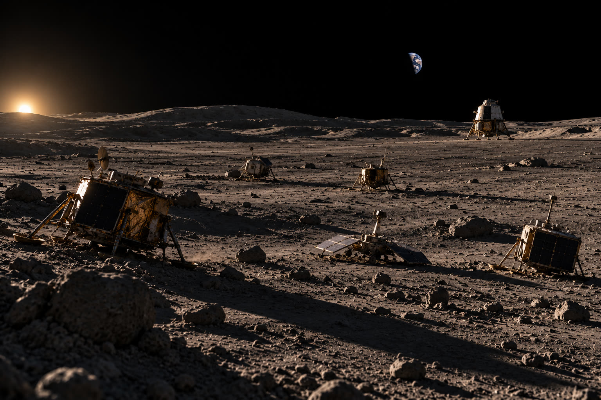
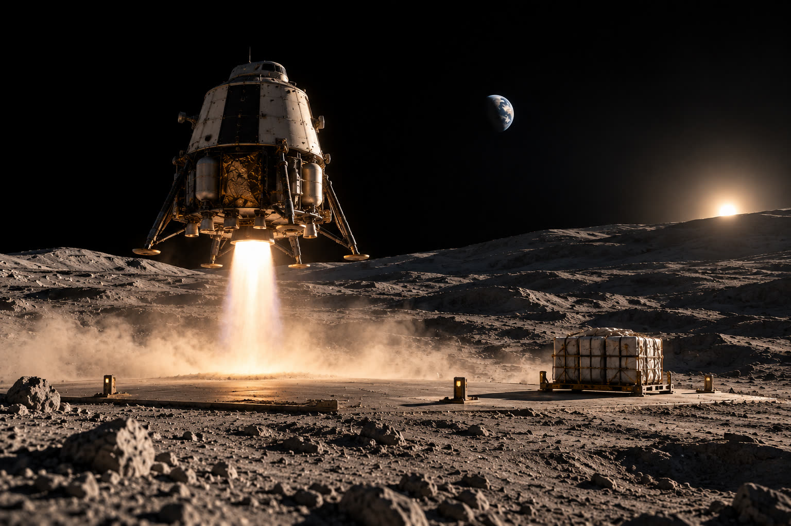

As the first Artemis landing moves toward execution, attention focuses on engines, schedules, and landing sites. Less visible, and more fundamental, is a risk that cannot be mitigated late in flight: astronauts survive a landing near the lunar south pole and then lose the ability to leave.
This is not a dramatic hypothetical. It follows directly from mission geometry, environment, and logistics. Once the crew descends, the Human Landing System is the only path back to lunar orbit. Orion can return to Earth. It cannot descend, cannot retrieve crew, and cannot intervene if ascent capability is lost.
If ascent fails and the crew survives, the mission enters a state of survivable but irrecoverable failure. There is no rapid rescue option and no backup launch on standby. Whatever happens next depends entirely on what was proven before the landing began.
01Everybody is landing. Nobody is taking off.
The modern lunar flight record is one-way. Every commercial lander flown this decade was designed to stay where it touched down. The only vehicles that have ever left the lunar surface are Apollo’s hypergolic ascent stages and the Soviet and Chinese sample-return capsules: small, storable-propellant, single-use. No one has ever relit a cryogenic engine on the Moon. No one has ever done it after the vehicle sat there for days.
That is the technology gap, and it hides in plain sight because landing is the photogenic half. Landing is a problem of sensors and control. Ascent is a problem of what happened to the vehicle while it sat on the surface: propellant boiloff with no way to top off, dust in the mechanisms, a tilted stance on unprepared regolith, a cold-soaked engine that has to start on the first try with no abort mode.
None of that shows up unless you try to leave. A hundred more one-way landers teach nothing about the half of the mission that kills the crew if it fails. The vehicle that proves ascent is not a lander. It is a shuttle, and it only gets proven by flying the round trip.

02Why the south pole makes this worse
The lunar south pole is not another Apollo-era landing site. It is defined by persistent low Sun angles, long shadows, rugged overlapping craters, intermittent communications, and sharp thermal gradients. These conditions place exceptional demands on navigation, sensing, and landing-system robustness.
They also raise the odds of the failure modes that matter here: the non-catastrophic ones. Tip-over on uneven terrain. Sensor disagreement in terminal descent. A post-landing propulsion or avionics fault. Mechanical damage that leaves the cabin intact and the ascent engines unusable. Many lunar and planetary landers have failed exactly this way, not as high-speed impacts but as systems that reached the surface and could not finish the mission.
Those cases define the stranding risk. They are not common. They are credible, and they are structurally different from a failure that kills the crew outright.
03Why Orion is not a safety net
An orbiting spacecraft looks like a backstop. In lunar operations it is not. Orion cannot land, cannot loiter at low altitude, and cannot maneuver between surface sites. A second crewed mission with another lander would need weeks or months of preparation, another heavy-lift launch, favorable orbital alignment, and a fully crew-rated vehicle. None of that fits inside the survival window of a crew stranded on the surface.
This is the sharp difference between the Moon and low Earth orbit. There is no equivalent of an ISS lifeboat launch on short notice. A surface rescue capability would need a lifeboat already on the ground, mobility across polar terrain, and enough consumables and communications to keep the crew alive while extraction happens. That is a second program, not a contingency option. For a first landing, adding an immature rescue layer increases total mission risk faster than it reduces it. A rescue system that fails when needed is worse than none.
So for the first landings, the single ascent path is the architecture. There is no second layer coming. Everything rides on whether that one path has been proven.
04Proven, not promised
If one path is all there is, it has to be demonstrably robust before crew board it. That means uncrewed demonstrations in representative south polar conditions, conservative site selection, overspecified sensing and navigation, real divert capability, and explicit design requirements that preserve ascent even after a hard or imperfect landing.
It also means repetition. Nobody human-rates a launch vehicle on two flights. They fly it twenty times and the crew certification falls out of the flight history. A single uncrewed demo is one data point. One sample tells you the vehicle can work; it does not tell you the vehicle works. The ascent-and-return leg is the one with no flight heritage at all, so it is the leg that most needs reps.
The test that matters is test-like-you-fly: the crew configuration, the full surface stay, engine relight after cold soak, climb to orbit, and rendezvous with the vehicle that takes the crew home. Anything less is a landing demo with a liftoff attached.

05What is actually being required
The program is not doing this. Artemis III has been restructured into a 2027 low-Earth-orbit docking test between Orion and lander test articles, and the first crewed landing has moved to Artemis IV in 2028. Both providers owe an uncrewed landing demonstration before then, both currently slated for 2027.
NASA’s own Office of Inspector General has said in writing that those demonstrations do not follow test-like-you-fly principles. Starship HLS is required to lift off from the surface and fire its engines, but not to reach orbit. Blue Moon Mark 2 is required to reach orbit. Neither is required to demonstrate end-to-end ascent, return, and docking with Orion or Gateway. The Starship demo vehicle is not expected to be the crew configuration.
So the architecture is now the worst quadrant: a single ascent path, no rescue layer, and a demonstration program that stops short of proving the one leg with no flight heritage. The part of the mission that gets the public attention, docking in LEO, is 1966 technology. The part that is unproven is the part nobody is being asked to prove.
06Defensible in hindsight
The cost of a stranding is not measured in budget. It is highly trained astronauts, years of institutional knowledge, and national investment. But history shows that fatal accidents do not automatically end human spaceflight. Programs have continued, and strengthened, after tragedy when causes were understood, fixes were clear, and leadership kept its credibility.
Outcomes differ when a failure is seen as avoidable. The reaction to an accident depends less on the event than on whether the architecture is defensible in hindsight. An ascent failure after the agency’s own inspector general recorded that ascent-to-orbit was never demonstrated is the textbook indefensible case. The paper trail already exists.
When Apollo 13 suffered a cascading systems failure, the crew came home because redundancy existed where it mattered. That redundancy looked expensive and unnecessary until it was the only reason anyone returned. Not every mission can carry that much contingency. Every mission must be able to explain, afterward, why the risks it accepted were reasonable at the time.
07Bottom line
For the first crewed landing, a single ascent system is the least risky option, provided it is proven under representative conditions, in the crew configuration, through the full round trip, more than once. Right now it is none of those things.
The fix is not a rescue program. It is reps. Get surface landing and ascent out from under the crewed schedule and fly it like a launch vehicle: repeatedly, uncrewed, on a manifest that does not stop every four years. A lander that cycles surface-to-orbit is a logistics vehicle, cargo down and hardware up, and every cycle is a data point the crew program inherits for free.
Everybody is landing. Until somebody is routinely taking off, the stranding risk is not a contingency. It is the plan.
Sources: NASA OIG findings on HLS crew safety, reported by SpacePolicyOnline; NASA HLS program status, IAC October 2026. Schedule and demonstration requirements as stated in those documents as of October 2026.